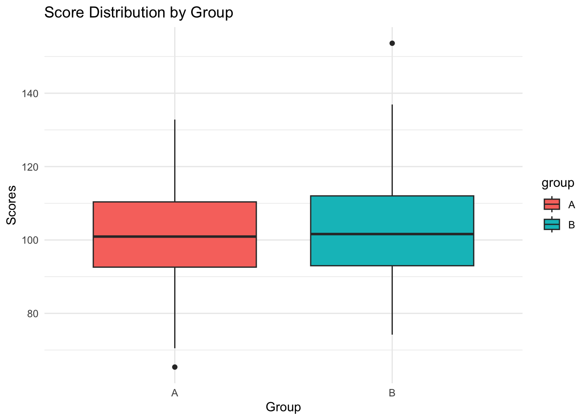
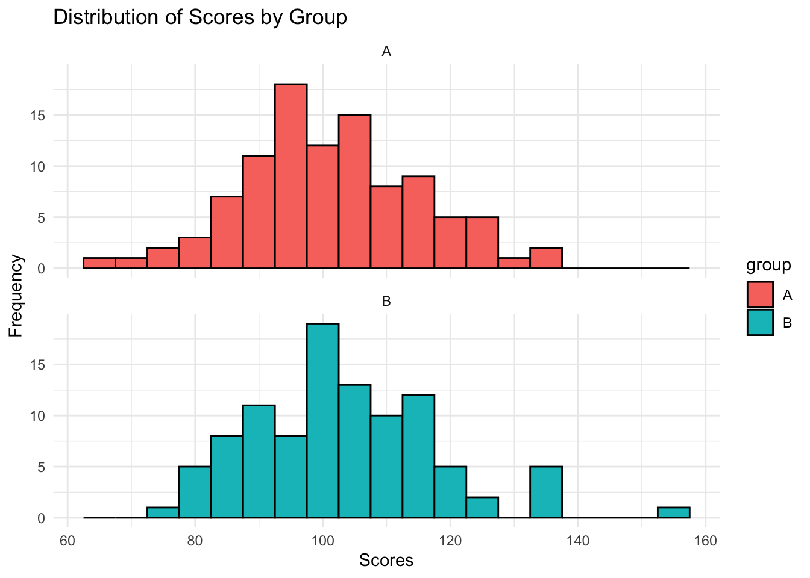
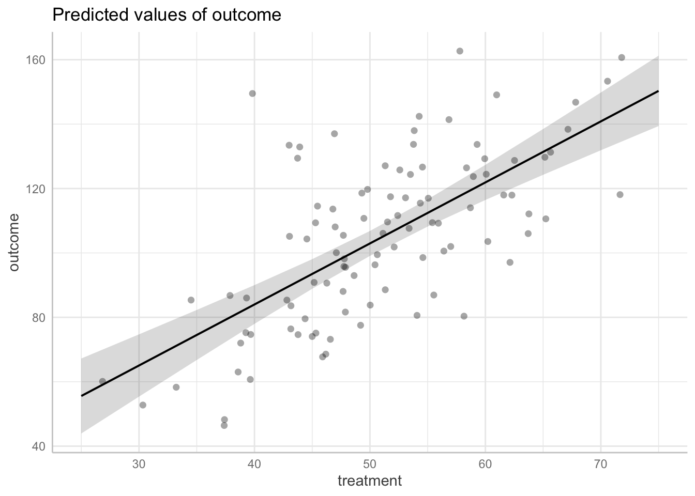
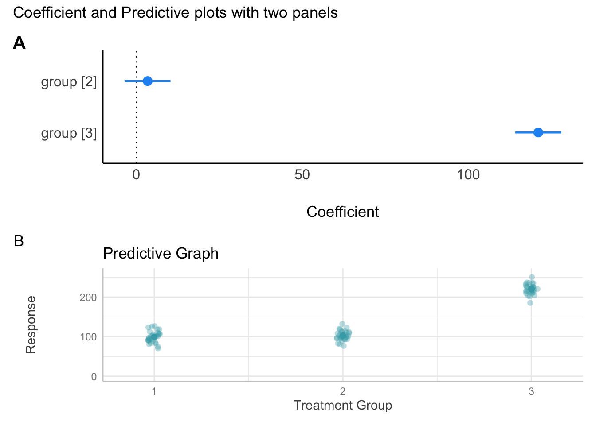
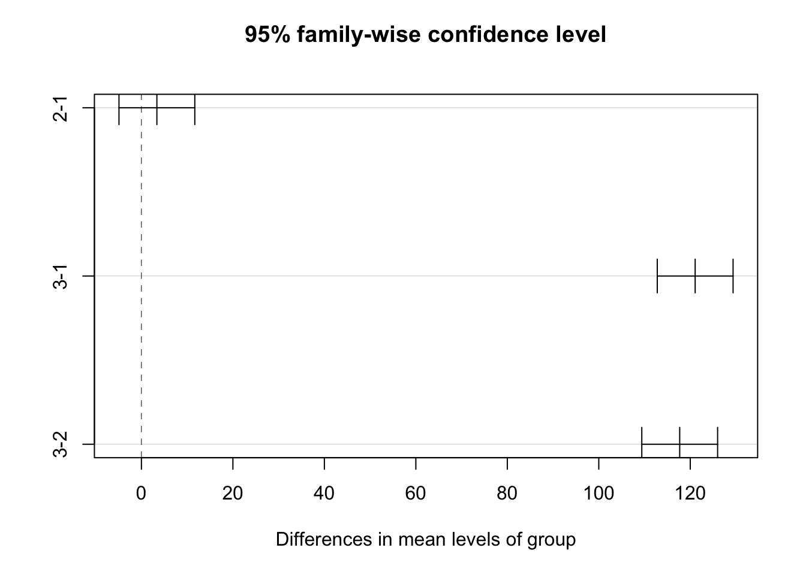
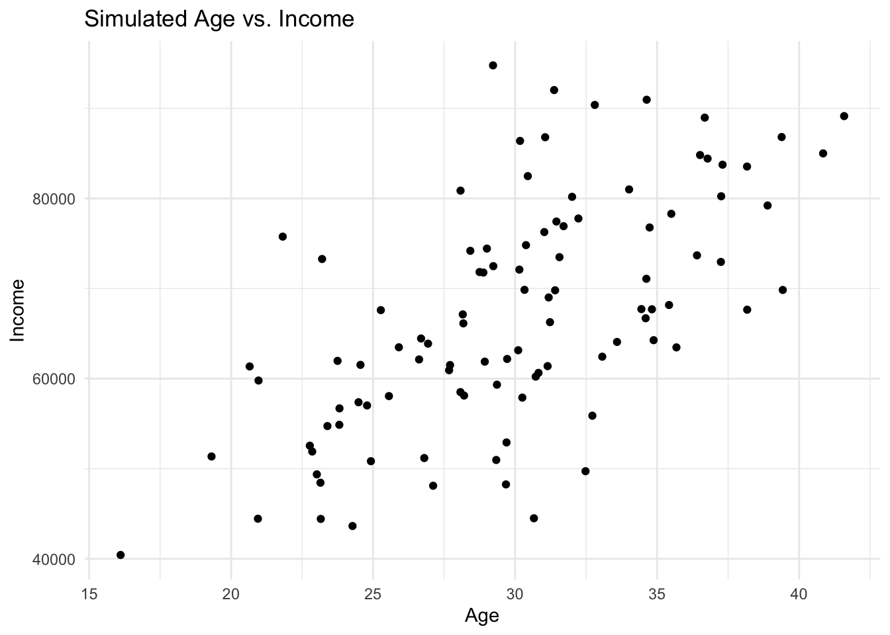

![]()
# Bob leBob
# 29 Feb 2024
# bob@lebob.fr
#. Lab 02 - Simulating The Five Basic Structures of Cauality
Readings
- Barrett M (2023). ggdag: Analyze and Create Elegant Directed Acyclic Graphs. R package version 0.2.7.9000, https://github.com/malcolmbarrett/ggdag
- “An Introduction to Directed Acyclic Graphs”, https://r-causal.github.io/ggdag/articles/intro-to-dags.html
- “Common Structures of Bias”, https://r-causal.github.io/ggdag/articles/bias-structures.html
Key concepts for the test(s):
- Confounding
- Causal Directed Acyclic Graph
- Five Elementary Causal Structures
- d-separation
- Back door path
- Conditioning
- Fork bias
- Collider bias
- Mediator bias
- Four Rules of Confounding Control
Download Your Laboratory R Script Here
Assuming you have installed R and RStudio:
Download the R script for Lab 01 by clicking the link below. This script contains the code you will work with during your laboratory session.
After downloading, open RStudio.
In RStudio, create a new R script file by going to
File > New File > R Script.Create a new
.Rfile called02-lab.Rand provide your name, contact, data, and a brief title such as “Rimulating the basic five basic causal structures in R”
Example:
Copy and paste the code chunks below from your computer onto the script during class.
Save the new R script file in a clearly defined project directory folder for easy access during the lab.
Bring your computer to the lab.
Note: you may also download the lab here Download the R script for Lab 02
Seminar
Overview
- Understand basic features of causal diagrams: definitions and applications
- Introduction to the five elementary causal structures
- Lab: Gentle Introduction to Simulation and Regression (TBC over the upcoming weeks)
Review
- Psychological research begins with two questions:
- What do I want to know?
- For which population does this knowledge generalise?
This course considers how to ask psychological questions that pertain to populations with different characteristics
In psychological research, we typically ask questions about the causes and consequences of thought and behaviour - “What if?” questions (Hernan and Robins 2024).
The following concepts help us to describe two distinct failure modes in psychological research when asking “What if?” questions:
Hernan, M. A., and J. M. Robins. 2024. Causal Inference: What If? Chapman & Hall/CRC Monographs on Statistics & Applied Probab. Taylor & Francis. https://www.hsph.harvard.edu/miguel-hernan/causal-inference-book/.
The Concept of External Validity: the extent to which the findings of a study can be generalised to other situations, people, settings, and time periods. That is, we want to know if our findings carry beyond the sample population to the target population. We fail when our results do not generalise as we think. More fundamentally, we fail when we have not clearly defined our question or our target population.
The Concept of Internal Validity: the extent to which the associations we obtain from data reflect causality. In psychological science, we use “independent variable” and “dependent variable.” Sometimes we use the terms “exogenous variable” and “endogenous variable.” Sometimes we use the term “predictor variable” to describe the “dependent” or “endogenous” variable. These words are confusing. When asking “What if?” questions, we want to understand what would happen if we intervened. In this course, we will use the term “treatment” or, equivalently the term “exposure” to denote the intervention; we will use the term “outcome” to denote the effect of an intervention.1
1 “What if?” questions implicitly invoke the idea of intervening on the world. “If we did this, then what would happen to that…?” Our preferred terminology reflects our interest in the effects of interventions.
- During the first part of the course, our primary focus will be on challenges to internal validity from confounding bias.
Definitions
Definition 1 We say internal validity is compromised if the association between the treatment and outcome in a study does not consistently reflect causality in the sample population as defined at baseline.
Definition 2 We say external validity is compromised if the association between the treatment and outcome in a study does not consistently reflect causality in the target population as defined at baseline.
The concept of “confounding bias” helps to clarify what it is at stake when evaluating the internal validity of a study. As we shall see, there are several equivalent definitions of “confounding bias,” which we will describe during the upcoming weeks.
The definition of confounding bias that we will examine today is:
Definition 3 We say there is confounding bias if there is an open back-door path between the treatment and outcome or if the path between the treatment and outcome is blocked.
Today, our purpose will be to clarify the meaning of each term in this definition. To that end, we will introduce the five elementary graphical structures employed in causal diagrams. We will then explain the four elementary rules that allow investigators to identify causal effects from the asserted relations in a causal diagram. First, what are causal diagrams?
Introduction to Causal Diagrams.
Causal diagrams, also called causal graphs, Directed Acyclic Graphs, and Causal Directed Acyclic Graphs, are graphical tools whose primary purpose is to enable investigators to detect confounding biases.
Remarkably, causal diagrams are rarely used in psychology!
Before describing how causal diagrams work, we first define the meanings of their symbols. Note there is no single convention for creating causal diagrams, so it is important that we are clear when defining our meanings.
The meaning of our symbols
The conventions that describe the meanings of our symbols are given in Figure 1.
Bulbulia, J. A. 2024. “Methods in Causal Inference Part 1: Causal Diagrams and Confounding.” Evolutionary Human Sciences 6: e40. https://doi.org/10.1017/ehs.2024.35.
For us:
X denotes a variable without reference to its role;
A denotes the “treatment” or “exposure” variable. This is the variable for which we seek to understand the effect of intervening on it. It is the “cause;”
Y denotes the outcome or response of an intervention. It is the “effect.” Last week we considered whether marriage A causes happiness Y.
Y(a) denotes the counterfactual or potential state of Y in response to setting the level of the exposure to a specific level, A=a. As we will consider in the second half of the course, to consistently estimate causal effects we will need to evaluate counterfactual or potential states of the world. Keeping to our example, we will need to do more than evaluate marriage and happiness in people over time. We will need to evaluate how happy the unmarried people would have been had they been married and how happy the married people would have been had they not been married. Of course, these events cannot be directly observed. Thus to address fundamental questions in psychology, we need to contrast counterfactual states of the world. This might seem like science fiction; however, we are already familiar with methods for obtaining such counterfactual contrasts – namely, randomised controlled experiments! We will return to this concept later, but for now, it will be useful for you to understand the notation.
L denotes a measured confounder or set of confounders is defined as a variable which, if conditioned upon, closes an open back-door path between the treatment A and the outcome Y. Consider the scenario where happiness at time 0 (L) affects both the probability of getting married at time 1 (A) and one’s happiness at time 2 (Y). In this case, L serves as a confounder because it influences both the treatment (marriage at time 1) and the outcome (happiness at time 2), potentially opening a back-door path that confounds the estimated effect of marriage on happiness.
To accurately estimate the causal effect of marriage on happiness, then, it is essential to control for L. With cross-sectional data, such control might be difficult.
U denotes an unmeasured confounder – that is a variable that may affect both the treatment and the outcome, but for which we have no direct measurement. Suppose cultural upbringing affects both whether someone gets married and whether they are happy. If this variable is not measured, we cannot accurately estimate a causal effect of marriage on happiness.
M denotes a mediator or a variable along the path from exposure to outcome. For example, perhaps marriage causes wealth and wealth causes happiness. As we shall see, conditioning on “wealth” when estimating the effect of marriage on happiness will make it seem that marriage does not cause happiness when it does, through wealth.
\bar{X} denotes a sequence of variables, for example, a sequence of treatments. Imagine we were interested in the causal effect of marriage and remarriage on well-being. In this case, there are two treatments A_0 and A_1 and four potential contrasts. For the scenario of marriage and remarriage affecting well-being, we denote the potential outcomes as Y(a_0, a_1), where a_0 and a_1 represent the specific values taken by A_0 and A_1, respectively. Given two treatments, A_0 and A_1, four primary contrasts of interest correspond to the different combinations of these treatments. These contrasts allow us to compare the causal effects of being married versus not and remarried versus not on well-being. The potential outcomes under these conditions can be specified as follows:
- Y(0, 0): The potential outcome when there is no marriage.
- Y(0, 1): The potential outcome when there is marriage.
- Y(1, 0): The potential outcome when there is divorce.
- Y(1, 1): The potential outcome from marriage prevalence.
Each of these outcomes allows for a specific contrast to be made, comparing the well-being under different scenarios of marriage and remarriage. Which do we want to contrast? Note, the question about ‘the causal effects of marriage on happiness’ is ambiguous because we have not stated the causal contrast we are interested in.
\mathcal{R} denotes a randomisation or a chance event.
Elements of our Causal Graphs
The conventions that describe components of our causal graphs are given in Figure 2.
Bulbulia, J. A. 2024. “Methods in Causal Inference Part 1: Causal Diagrams and Confounding.” Evolutionary Human Sciences 6: e40. https://doi.org/10.1017/ehs.2024.35.
Time indexing
In our causal diagrams, we will implement two conventions to accurately depict the temporal order of events.
First, the layout of a causal diagram will be structured from left to right to reflect the sequence of causality as it unfolds in reality. This orientation is crucial because causal diagrams must inherently be acyclic and because causality itself is inherently temporal.
Second, we will enhance the representation of the event sequence within our diagrams by systematically indexing our nodes according to the relative timing of events. If an event represented by X_0 precedes another event represented by X_1, the indexing will indicate this chronological order.
Representing uncertainty in timing explicitly
In settings in which the sequence of events is ambiguous or cannot be definitively known, particularly in the context of cross-sectional data where all measurements are taken at a single point in time, we adopt a specific convention to express causality under uncertainty: X_{\phi t}. This notation allows us to propose a temporal order without clear, time-specific measurements, acknowledging our speculation.
For instance, when the timing between events is unclear, we denote an event that is presumed to occur first as X_{\phi 0} and a subsequent event as X_{\phi 1}, indicating a tentative ordering where X_{\phi 0} is thought to precede X_{\phi 1}. However, it is essential to underscore that this notation signals our uncertainty regarding the actual timing of events; our measurements do not give us the confidence to assert this sequence definitively.
Arrows
As indicated in Figure 2, black arrows denote causality, red arrows reveal an open backdoor path, dashed black arrows denote attenuation, and red dashed arrows denote bias in a true causal association between A and Y. Finally, a blue arrow with a circle point denotes effect-measure modification, also known as “effect modification.” We might be interested in treatment effect heterogeneity without evaluating the causality in the sources of this heterogeneity. For example, we cannot typically imagine any intervention in which people could be randomised into cultures. However, we may be interested in whether the effects of an intervention that might be manipulable, such as marriage, differ by culture. To clarify this interest, we require a non-causal arrow.
\mathcal{R}\to A denotes a random treatment assignment.
Boxes
We use a black box to denote conditioning that reduces confounding or that is inert.
We use a red box to describe settings in which conditioning on a variable introduces confounding bias.
Occasionally we will use a dashed circle do denote a latent variable, that is, a variable that is either not measured or not conditioned upon.
Terminology for Conditional Independence
The bottom panel of Figure 2 shows some mathematical notation. Do not be alarmed, we are safe! Part 1 of the course will not require more complicated math than this notation. And we shall see that the notation is a compact way to describe intuitions that can be expressed less compactly in words:
Statistical Independence (\coprod): in the context of causal inference, statistical independence between the treatment and potential outcomes, denoted as A \coprod Y(a), means the treatment assignment is independent of the potential outcomes. This assumption is critical for estimating causal effects without bias.
Statistical Dependence (\cancel\coprod): conversely, \cancel\coprod denotes statistical dependence, indicating that the distribution of one variable is influenced by the other. For example, A \cancel\coprod Y(a) implies that the treatment assignment is related to the potential outcomes, potentially introducing bias into causal estimates.
Conditioning (|): conditioning, denoted by the vertical line |, allows for specifying contexts or conditions under which independence or dependence holds.
Conditional Independence (A \coprod Y(a)|L): This means that once we account for a set of variables L, the treatment and potential outcomes are independent. This condition is often the basis for strategies aiming to control for confounding.
Conditional Dependence (A \cancel\coprod Y(a)|L): States that potential outcomes and treatments are not independent after conditioning on L, indicating a need for careful consideration in the analysis to avoid biased causal inferences.
The Five Elementary Structures of Causality
Judea Pearl proved that all elementary structures of causality can be represented graphically (Pearl 2009). Figure 3 presents this five elementary structures.
Pearl, Judea. 2009. Causality. Cambridge University Press.
Bulbulia, J. A. 2024. “Methods in Causal Inference Part 1: Causal Diagrams and Confounding.” Evolutionary Human Sciences 6: e40. https://doi.org/10.1017/ehs.2024.35.
The structures are as follows:
- Two Variables:
- Causality Absent: There is no causal effect between variables A and B. They do not influence each other, denoted as A \coprod B, indicating they are statistically independent.
- Causality: Variable A causally affects variable B. This relationship suggests an association between them, denoted as A \cancel\coprod B, indicating they are statistically dependent.
- Three Variables:
- Fork: Variable A causally affects both B and C. Variables B and C are conditionally independent given A, denoted as B \coprod C | A. This structure implies that knowing A removes any association between B and C due to their common cause.
- Chain: A causal chain exists where C is affected by B, which in turn is affected by A. Variables A and C are conditionally independent given B, denoted as A \coprod C | B. This indicates that B mediates the effect of A on C, and knowing B breaks the association between A and C.
- Collider: Variable C is affected by both A and B, which are independent. However, conditioning on C induces an association between A and B, denoted as A \cancel\coprod B | C. This structure is unique because it suggests that A and B, while initially independent, become associated when we account for their common effect C.
Once we understand the basic relationships between two variables, we can build upon these to create more complex relationships. These structures help us see how statistical independences and dependencies emerge from the data, allowing us to clarify the causal relationships we presume exist. Such clarity is crucial for ensuring that confounders are balanced across treatment groups, given all measured confounders, so that Y(a) \coprod A | L.
You might wonder, “If not from the data, where do our assumptions about causality come from?” This question will come up repeatedly throughout the course. The short answer is that our assumptions are based on existing knowledge. This reliance on current knowledge might seem counterintuitive for buiding scientific knowledge-— shouldn’t we use data to build knowledge, not the other way around? Yes, but it is not that straightforward. Data often hold the answers we’re looking for but can be ambiguous. When the causal structure is unclear, it is important to sketch out different causal diagrams, explore their implications, and, if necessary, conduct separate analyses based on these diagrams.
Otto Neurath, an Austrian philosopher and a member of the Vienna Circle, famously used the metaphor of a ship that must be rebuilt at sea to describe the process of scientific theory and knowledge development.
Duhem has shown … that every statement about any happening is saturated with hypotheses of all sorts and that these in the end are derived from our whole world-view. We are like sailors who on the open sea must reconstruct their ship but are never able to start afresh from the bottom. Where a beam is taken away a new one must at once be put there, and for this the rest of the ship is used as support. In this way, by using the old beams and driftwood, the ship can be shaped entirely anew, but only by gradual reconstruction. (Neurath 1973, 199)
Neurath, Otto. 1973. “Anti-Spengler.” In Empiricism and Sociology, edited by Marie Neurath and Robert S. Cohen, 158–213. Dordrecht: Springer Netherlands. https://doi.org/10.1007/978-94-010-2525-6_6.
This quotation emphasises the iterative process that accumulates scientific knowledge; new insights are cast from the foundation of existing knowledge. Causal diagrams are at home in Neurath’s boat. The tradition of science that believes that knowledge develops from the results of statistical tests applied to data should be resisted. The data alone typically do not contain the answers we seek.
The Four Rules of Confounding Control
Figure 4 describe the four elementary rules of confounding control:
Condition on Common Cause or its Proxy: this rule applies to settings in which the treatment (A) and the outcome (Y) share common causes. By conditioning on these common causes, we block the open backdoor paths that could introduce bias into our causal estimates. Controlling for these common causes (or their proxies) helps tp isolate the specific effect of A on Y. (We do not draw a path from $ A Y$ because we do not assume this path.)
Do Not Condition on a Mediator: this rule applies to settings in which the variable L is a mediator of A \to Y. Here, conditioning on a mediator will bias the total causal effect estimate. Later in the course, we will discuss the assumptions required for causal mediation. For now, if we are interested in total effect estimates, we must not condition on a mediator. Here we draw the path from A \to Y to ensure that if such a path exists, it will not become biased from our conditioning strategy.
Do Not Condition on a Collider: this rule applies to settings in which we L is a common effect of A and Y. Conditioning on a collider may invoke a spurious association. Last week we considered an example in which marriage caused wealth and happiness caused wealth. Conditioning on wealth in this setting will induce an association between happiness and marriage. Why? If we know the outcome, wealth, then we know there are at least two ways of wealth. Among those wealthy but low on happiness, we can predict that they are more likely to be married, for how else would they be wealthy? Similarly, among those who are wealthy and are not married, we can predict that they are happy, for how else would they be wealthy if not through marriage? These relationships are predictable entirely without a causal association between marriage and happiness!
Proxy Rule: Conditioning on a Descendent Is Akin to Conditioning on Its Parent: this rule applies to settings in which we L’ is an effect from another variable L. The graph considers when L’ is downstream of a collider. For example, suppose we condition on home ownership, which is an effect of wealth. Such conditioning will open up a non-causal path without causation because home ownership is a proxy for wealth. Consider, if someone owns a house but is not married, they are more likely to be happy, for how else could they accumulate the wealth required for home ownership? Likewise, if someone is unhappy and owns a house, we can infer that they are more likely to be married because how else would they be wealthy? Conditioning on a proxy for a collider here is akin to conditioning on the collider itself.
However, we can also use the proxy rule to reduce bias. Return to the earlier example in which there is an unmeasured common cause of marriage and happiness, which we called “cultural upbringing” Suppose we have not measured this variable but have measured proxies for this variable, such as country of birth, childhood religion, number of languages one speaks, and others. By controlling for baseline values of these proxies, we can exert more control over unmeasured confounding. Even if bias is not eliminated, we should reduce bias wherever possible, which includes not introducing new biases, such as mediator bias, along the way. Later in the course, we will teach you how to perform sensitivity analyses to verify the robustness of your results to unmeasured confounding. Sensitivity analysis is critical because where the data are observational, we cannot entirely rule out unmeasured confounding.
Lab – Regression in R, Graphing, and Elements of Simulation
Simulating Data in R: Outcome ~ Treatment
Step 1: Set Up Your R Environment
Ensure R or RStudio is installed and open.
Step 2: Set a Seed for Reproducibility
To ensure that your simulated data can be reproduced exactly. Again, it is good practice to set a seed before generating random data. This makes your analyses and simulations replicable.
set.seed(123) # use any number to set the seedStep 3: Simulate Continuous Data: One Variable
To simulate continuous data, you can use functions like rnorm() for normal distributions, runif() for uniform distributions, etc. Here we simulate 100 normally distributed data points with a mean of 50 and a standard deviation of 10:
n <- 100 # number of observations
mean <- 50
sd <- 10
data_continuous <- rnorm(n, mean, sd)
# view
head(data_continuous)[1] 44.39524 47.69823 65.58708 50.70508 51.29288 67.15065# view using base R histogram
hist(data_continuous)
Step 4: Simulate Categorical Data
Categorical data can be simulated using the sample() function. Here, we simulate a binary variable (gender) with two levels for 100 observations. There is equal probability of assignment.
levels <- c("Male", "Female")
data_categorical <- sample(levels, n, replace = TRUE)
# view
head(data_categorical)[1] "Female" "Female" "Female" "Male" "Female" "Female"# check
table(data_categorical)data_categorical
Female Male
49 51 To generate categories with unequal probabilities, you can use the sample() function by specifying the prob parameter, which defines the probability of selecting each level. This allows for simulating categorical data where the distribution between categories is not uniform.
Below is an example that modifies your initial code to create a categorical variable with unequal probabilities for “Male” and “Female”. Here is an example with unequal probabilities:
# define levels and number of observations
levels <- c("Male", "Female")
n <- 100 # total number of observations
# generate categorical data with unequal probabilities
data_categorical_unequal <- sample(levels, n, replace = TRUE, prob = c(0.3, 0.7))
# view the first few elements
# head(data_categorical_unequal)
# check
table(data_categorical_unequal)data_categorical_unequal
Female Male
69 31 Simulating Outcomes from Treatments
In this example, the prob parameter is set to c(0.3, 0.7), indicating a 30% probability for “Male” and a 70% probability for “Female”. This results in a simulated dataset where approximately 30% of the observations are “Male” and 70% are “Female”, reflecting the specified unequal probabilities. Adjust the probabilities as needed to fit the scenario you wish to simulate.
#|fig-cap: "Box plot of simulated scores by groups."
# note: running this code will do no harm if the libraries are already installed.
# install (if necessary) libraries
# load libraries
# libraries
# graphs
if (!require(ggplot2)) {
install.packages("ggplot2")
library(ggplot2)
} else {
library(ggplot2)
}
# data wrangling
if (!require(tidyverse)) {
install.packages("tidyverse")
library(tidyverse)
} else {
library(tidyverse)
}
# tables
if (!require(parameters)) {
install.packages("parameters")
library(parameters)
} else {
library(parameters)
}
# reporting
if (!require(report)) {
install.packages("report")
library(report)
} else {
library(report)
}
# predictive graphs
if (!require(ggeffects)) {
install.packages("ggeffects")
library(ggeffects)
} else {
library(ggeffects)
}
# assembling graphs
if (!require(patchwork)) {
install.packages("patchwork")
library(patchwork)
} else {
library(patchwork)
}
# if libraries are already install, start here
library(tidyverse)
library(ggplot2)
library(patchwork)
library(parameters)
library(report)
set.seed(123) # reproducibility
groupA_scores <- rnorm(100, mean = 100, sd = 15) # simulate scores for group A
groupB_scores <- rnorm(100, mean = 105, sd = 15) # simulate scores for group B
# ombine into a data frame
df_scores <- data.frame(group = rep(c("A", "B"), each = 100), scores = c(groupA_scores, groupB_scores))
# commands to view data
#str(df_scores)
# summary of columns
#summary(df_scores)
# top rows (uncomment)
# head(df_scores)
# bottom rows (uncomment)
# tail(df_scores)
# check structure of data (uncomment)
# str(df_scores)
# make group a factor (not strictly necessary here, but useful in outher applications)
df_scores_1 <- df_scores |>
mutate(group = as.factor(group))
head(df_scores_1) group scores
1 A 91.59287
2 A 96.54734
3 A 123.38062
4 A 101.05763
5 A 101.93932
6 A 125.72597Visualising Our Simulated Data
Understanding your data visually is as important as the statistical analysis itself. Let’s create a simple plot to compare the score distributions between the two groups.
# plot your data
ggplot(df_scores_1, aes(x = group, y = scores, fill = group)) +
geom_boxplot() +
theme_minimal() +
labs(title = "Score Distribution by Group", x = "Group", y = "Scores")
Histogram
#fig-cap: "Histogram of simulated scores, by group, using facet_wrap()"
library(ggplot2)
# H=histograms for both groups
ggplot(df_scores_1, aes(x = scores, fill = group)) +
geom_histogram(binwidth = 5, color = "black") +
labs(title = "Distribution of Scores by Group",
x = "Scores",
y = "Frequency") +
facet_wrap(~group, ncol = 1) + theme_minimal() 
Excercise 1
Modify the simulation parameters to change each group’s mean and standard deviation. Observe how these changes affect the distribution.
Go to the histogram. Experiment with different bin widths. In your own words, how do large and small numbers speak differently to the data? When might you use one histogram and not another.
Simulating data for familiar statistical tests
# tbl-caption: "results of a one-sample t-test."
# simulate some data
set.seed(123)
data <- rnorm(100, mean = 5, sd = 1) # 100 random normal values with mean = 5
# perform one-sample t-test
# testing if the mean of the data is reliably different from 4
mod_first_test<- t.test(data, mu = 4)
# table
parameters::parameters(mod_first_test)One Sample t-test
Parameter | Mean | mu | Difference | 95% CI | t(99) | p
--------------------------------------------------------------------
data | 5.09 | 4.00 | 1.09 | [4.91, 5.27] | 11.95 | < .001
Alternative hypothesis: true mean is not equal to 4We can automatically report these results using the report package:
# report results automatically
report::report(mod_first_test)Effect sizes were labelled following Cohen's (1988) recommendations.
The One Sample t-test testing the difference between data (mean = 5.09) and mu
= 4 suggests that the effect is positive, statistically significant, and large
(difference = 1.09, 95% CI [4.91, 5.27], t(99) = 11.95, p < .001; Cohen's d =
1.19, 95% CI [0.94, 1.45])# simulate data for two groups
set.seed(123)
group1 <- rnorm(50, mean = 5, sd = 1) # 50 random normal values, mean = 5
group2 <- rnorm(50, mean = 5.5, sd = 1) # 50 random normal values, mean = 5.5
# two-sample t-test
mod_t_test_result <- t.test(group1, group2)
report::report(mod_t_test_result)Effect sizes were labelled following Cohen's (1988) recommendations.
The Welch Two Sample t-test testing the difference between group1 and group2
(mean of x = 5.03, mean of y = 5.65) suggests that the effect is negative,
statistically significant, and medium (difference = -0.61, 95% CI [-0.98,
-0.25], t(97.95) = -3.34, p = 0.001; Cohen's d = -0.67, 95% CI [-1.07, -0.26])parameters::parameters(mod_t_test_result)Welch Two Sample t-test
Parameter1 | Parameter2 | Mean_Parameter1 | Mean_Parameter2 | Difference
------------------------------------------------------------------------
group1 | group2 | 5.03 | 5.65 | -0.61
Parameter1 | 95% CI | t(97.95) | p
----------------------------------------------
group1 | [-0.98, -0.25] | -3.34 | 0.001
Alternative hypothesis: true difference in means is not equal to 0# simulate pre-test and post-test scores
set.seed(123)
pre_test <- rnorm(30, mean = 80, sd = 10)
post_test <- rnorm(30, mean = pre_test + 5, sd = 5) # assume an increase
# perform paired t-test
mod_pre_post <- t.test(pre_test, post_test, paired = TRUE)
report::report(mod_pre_post)Effect sizes were labelled following Cohen's (1988) recommendations.
The Paired t-test testing the difference between pre_test and post_test (mean
difference = -5.89) suggests that the effect is negative, statistically
significant, and large (difference = -5.89, 95% CI [-7.45, -4.33], t(29) =
-7.73, p < .001; Cohen's d = -1.41, 95% CI [-1.91, -0.90])parameters::parameters(mod_pre_post)Paired t-test
Parameter | Group | Difference | t(29) | p | 95% CI
--------------------------------------------------------------------
pre_test | post_test | -5.89 | -7.73 | < .001 | [-7.45, -4.33]
Alternative hypothesis: true mean difference is not equal to 0Understanding Regression Using Data Simulation
Simulating Continuous Treatment Variable and Outcome Variable
# library for enhanced model reporting
set.seed(123)
library(parameters)
library(report)
# set seed for reproducibility
set.seed(123) # choose a seed number for consistency
# define the number of observations
n <- 100 # total observations
# simulate continuous treatment variable A
treatment <- rnorm(n, mean = 50, sd = 10) # mean = 50, sd = 10 for A
# specify the effect size of A on Y
beta_a <- 2 # explicit effect size
# simulate outcome variable Y including an error term
outcome <- 5 + beta_a * treatment + rnorm(n, mean = 0, sd = 20) # Y = intercept + beta_a*A + error
# create a dataframe
df <- data.frame(treatment = treatment,outcome = outcome)
# view the structure and first few rows of the data frame
str(df)'data.frame': 100 obs. of 2 variables:
$ treatment: num 44.4 47.7 65.6 50.7 51.3 ...
$ outcome : num 79.6 105.5 131.2 99.5 88.6 ...head(df) treatment outcome
1 44.39524 79.58236
2 47.69823 105.53412
3 65.58708 131.24033
4 50.70508 99.45932
5 51.29288 88.55338
6 67.15065 138.40075Run Linear Model
Before moving on to regression analysis, ensure students understand the structure and distribution of the simulated data. Encourage them to use summary(), plot(), and other exploratory data analysis functions.
Regression Analysis of Continuous Treatment Effect
set.seed(123)
# perform linear regression of Y on A
fit <- lm(outcome ~ treatment, data = df)
# display the regression model summary
summary(fit)
Call:
lm(formula = outcome ~ treatment, data = df)
Residuals:
Min 1Q Median 3Q Max
-38.15 -13.67 -1.75 11.61 65.81
Coefficients:
Estimate Std. Error t value Pr(>|t|)
(Intercept) 8.1911 11.0530 0.741 0.46
treatment 1.8951 0.2138 8.865 3.5e-14 ***
---
Signif. codes: 0 '***' 0.001 '**' 0.01 '*' 0.05 '.' 0.1 ' ' 1
Residual standard error: 19.41 on 98 degrees of freedom
Multiple R-squared: 0.4451, Adjusted R-squared: 0.4394
F-statistic: 78.6 on 1 and 98 DF, p-value: 3.497e-14# report the model in a reader-friendly format
report_fit <- report::report(fit)
# uncomment to print the model report
# print(report_fit)
# use ggeffects to view predicted values
library(ggeffects)
predicted_values <- ggeffects::ggemmeans(fit,
terms = c("treatment"))
# plot see
plot(predicted_values, dot_alpha = 0.35, show_data = TRUE, jitter = .1)
Equivalence of ANOVA and Regression
We will simulate data in R to show that a one-way ANOVA is a particular case of linear regression with categorical predictors. We will give some reasons for preferring regression (in some settings).
Method
First, we simulate a dataset with one categorical independent variable with three levels (groups) and a continuous outcome (also called a “dependant”) variable. This setup allows us to apply both ANOVA and linear regression for comparison.
# nice tables
library(parameters)
set.seed(123) # reproducibility
n <- 90 # total number of observations
k <- 3 # number of groups
# simulate independent variable (grouping factor)
group <- factor(rep(1:k, each = n/k))
# inspect
str(group) Factor w/ 3 levels "1","2","3": 1 1 1 1 1 1 1 1 1 1 ...# simulate outcome variable
means <- c(100, 100, 220) # Mean for each group
sd <- 15 # Standard deviation (same for all groups)
# generate random data
y <- rnorm(n, mean = rep(means, each = n/k), sd = sd)
# make data frame
df_1 <- cbind.data.frame(y, group)
anova_model <- aov(y ~ group, data = df_1)
# summary(anova_model)
table_anova <- model_parameters(anova_model)
# report the model
report::report(anova_model)The ANOVA (formula: y ~ group) suggests that:
- The main effect of group is statistically significant and large (F(2, 87) =
786.88, p < .001; Eta2 = 0.95, 95% CI [0.93, 1.00])
Effect sizes were labelled following Field's (2013) recommendations.Next, we analyse the same data using linear regression. In R, regression models automatically convert categorical variables into dummy variables.
# for tables (just installed)
library(parameters)
# regression model
fit_regression <- lm(y ~ group, data = df_1)
# uncomment if you want an ordinary summary
# summary(regression_model)
table_fit <- parameters::model_parameters(fit_regression)
# print table
table_fitParameter | Coefficient | SE | 95% CI | t(87) | p
--------------------------------------------------------------------
(Intercept) | 99.29 | 2.46 | [ 94.41, 104.18] | 40.40 | < .001
group [2] | 3.38 | 3.48 | [ -3.53, 10.29] | 0.97 | 0.333
group [3] | 121.07 | 3.48 | [114.16, 127.98] | 34.83 | < .001library(parameters)
library(report)
# report the model
report_fit <- report_parameters(fit_regression)
#print
report_fit - The intercept is statistically significant and positive (beta = 99.29, 95% CI [94.41, 104.18], t(87) = 40.40, p < .001; Std. beta = -0.71, 95% CI [-0.80, -0.63])
- The effect of group [2] is statistically non-significant and positive (beta = 3.38, 95% CI [-3.53, 10.29], t(87) = 0.97, p = 0.333; Std. beta = 0.06, 95% CI [-0.06, 0.18])
- The effect of group [3] is statistically significant and positive (beta = 121.07, 95% CI [114.16, 127.98], t(87) = 34.83, p < .001; Std. beta = 2.08, 95% CI [1.96, 2.20])Combination Plots
We can create and combine individual plots, as showin in Figure 5, as follows:
# regression --------------------------------------------------------------
# graph the output of the parameters table and assign to object
coefficient_plot <- plot(table_fit)
# ggeffects plot - create predictive plot.
# this gives the expected values by group
predictive_plot <- plot(
ggeffects::ggpredict(fit_regression, terms = "group"),
dot_alpha = 0.35,
show_data = TRUE,
jitter = .1,
colors = "reefs"
) +
scale_y_continuous(limits = c(0, 260)) + # change y axis
labs(title = "Predictive Graph", x = "Treatment Group", y = "Response")
# view (uncomment to see it alone)
#predictive_plot
# show all color palettes (uncomment to see colour options)
# show_pals()
# multiple plots using `patchwork`
library(patchwork)
# create a plot
my_first_combination_plot <- coefficient_plot / predictive_plot +
plot_annotation(title = "Coefficient and Predictive plots with two panels ",
tag_levels = "A")
# save a plot to your directory, make sure to create one called "figs"
## check directory (uncomments)
# here::here()
# save (change values if necessary )
ggsave(
my_first_combination_plot,
path = here::here("figs"),
width = 12,
height = 8,
units = "in",
filename = "my_first_combination_plot.jpeg",
device = 'jpeg',
limitsize = FALSE,
dpi = 600
)
# view
my_first_combination_plot

Upshot
ANOVA partitions variance into between-group and within-group components. Regression analysis estimates the mean of the dependent variable as a linear function of the independent (including categorical) variables. For many questions, ANOVA is appropriate, however, when comparing groups, we often want a finer-grained interpretation. Regression is built for obtaining this finer grain comparisons. Note: comparisons do not establish causality. We will return to regression over the next few weeks and use regression to hone your skills in R. Later, along the way, you’ll learn more about data visualisation, modelling, and reporting. These skills are essential for your final report. They are also skills that you will serve you beyond this course.
Exercise 2
Perform a linear regression analysis using R. Follow the detailed instructions below to simulate the necessary data, execute the regression, and report your findings:
- Simulate Data:
- Generate two continuous variables,
YandA, withn = 100observations each. - The variable
Ashould have a mean of50and a standard deviation (sd) of10.
- Generate two continuous variables,
- Define the Relationship:
- Simulate the variable
Ysuch that it is linearly related toAwith a specified effect size. The effect size ofAonYmust be explicitly defined as2.
- Simulate the variable
- Incorporate an Error Term:
- When simulating
Y, include an error term with a standard deviation (sd) of20to introduce variability.
- When simulating
- Regression Analysis:
- Use the
lm()function in R to regressYonA. - Ensure the regression model captures the specified effect of
AonY.
- Use the
- Report the Results:
- Output the regression model summary to examine the coefficients, including the effect of
AonY, and assess the model’s overall fit and significance.
- Output the regression model summary to examine the coefficients, including the effect of
Here is a template to get you started. Copy the code and paste it into your R script.
library(parameters)
# seed for reproducibility
set.seed( ) # numbers go in brackets
# number of observations
n <- # number goes here
# simulate data for variable A with specified mean and sd
A <- rnorm(n,
mean = , # set your number here
sd = )# set your number here
# define the specified effect size of A on Y
beta_A <- # define your effect with a number here
# simulate data and make data frame in one step
df_3 <- data.frame(
# simulate data for variable A with specified mean and sd
A = A, # from above
Y = 5 + beta_A * A + rnorm(n, mean = 0, sd = 20) # effect is intercept + ...
)
# view
head(df_3)
str(df_3)
# linear regression of Y on A
fit_3 <- lm(Y ~ A, data = df_3)
# results (standard code)
# summary(model)
# time saving reports
parameters::model_parameters(fit_3)
report(fit_3)What You Have Learned
- Data simulation:
You’ve learned to simulate datasets in R. This is a important skill for exploring statistical concepts and causal inference. Congratulations!
- Data visualisation:
You’ve expanded your capacity for data visualisation.
Statistical tests: You’ve conducted basic statistical tests, including t-tests and ANOVA, and regression.
Understanding ANOVA and regression:
You’ve examined the equivalence of ANOVA and regression analysis
For more information about the packages used here:
ggplot2: A system for declaratively creating graphics, based on The Grammar of Graphics.
Parameters package: Provides utilities for processing model parameters and their metrics.
Report package: Facilitates the automated generation of reports from statistical models.
Montgomery, Nyhan, and Torres (2018) describes confounding in experiments - well worth a read.
Montgomery, Jacob M., Brendan Nyhan, and Michelle Torres. 2018. “How Conditioning on Posttreatment Variables Can Ruin Your Experiment and What to Do about It.” American Journal of Political Science 62 (3): 760–75. https://doi.org/10.1111/ajps.12357.
Appendix A: Solutions
Solution Excercise 2: simulate data and regression reporting
library(parameters)
# seed for reproducibility
set.seed(12345)
# number of observations
n <- 100
# simulate data for variable A with specified mean and sd
A <- rnorm(n, mean = 50, sd = 10)
# define the specified effect size of A on Y
beta_A <- 2
# simulate data and make data frame in one step
df_3 <- data.frame(
# simulate data for variable A with specified mean and sd
A = rnorm(n, mean = 50, sd = 10),
Y = 5 + # intercept (optional)
beta_A * A + rnorm(n, mean = 0, sd = 20)
)
# view
head(df_3) A Y
1 52.23925 87.98766
2 38.43777 106.60413
3 54.22419 107.68437
4 36.75245 117.09730
5 51.41084 133.74473
6 44.63952 70.74512str(df_3)'data.frame': 100 obs. of 2 variables:
$ A: num 52.2 38.4 54.2 36.8 51.4 ...
$ Y: num 88 107 108 117 134 ...# linear regression of Y on A
fit_3 <- lm(Y ~ A, data = df_3)
# results
# summary(model)
# nicer report
parameters::model_parameters(fit_3)Parameter | Coefficient | SE | 95% CI | t(98) | p
--------------------------------------------------------------------
(Intercept) | 109.17 | 14.62 | [80.17, 138.18] | 7.47 | < .001
A | -3.80e-03 | 0.28 | [-0.57, 0.56] | -0.01 | 0.989 report(fit_3)We fitted a linear model (estimated using OLS) to predict Y with A (formula: Y
~ A). The model explains a statistically not significant and very weak
proportion of variance (R2 = 1.83e-06, F(1, 98) = 1.79e-04, p = 0.989, adj. R2
= -0.01). The model's intercept, corresponding to A = 0, is at 109.17 (95% CI
[80.17, 138.18], t(98) = 7.47, p < .001). Within this model:
- The effect of A is statistically non-significant and negative (beta =
-3.80e-03, 95% CI [-0.57, 0.56], t(98) = -0.01, p = 0.989; Std. beta =
-1.35e-03, 95% CI [-0.20, 0.20])
Standardized parameters were obtained by fitting the model on a standardized
version of the dataset. 95% Confidence Intervals (CIs) and p-values were
computed using a Wald t-distribution approximation.Appendix B: How ANOVA can deliver the functionality of Linear Regressions
We can get group comparisons with ANOVA, for example:
# Conduct Tukey's HSD test for post hoc comparisons
tukey_post_hoc <- TukeyHSD(anova_model)
# Display the results
print(tukey_post_hoc) Tukey multiple comparisons of means
95% family-wise confidence level
Fit: aov(formula = y ~ group, data = df_1)
$group
diff lwr upr p adj
2-1 3.381631 -4.906624 11.66989 0.5958959
3-1 121.072862 112.784607 129.36112 0.0000000
3-2 117.691231 109.402975 125.97949 0.0000000plot(tukey_post_hoc)
Regression and ANOVA are equivalent
Appendix C: Adding Complexity in Simulation
Simulating Data… Continued
Data frames are used in R to store data tables. To simulate a dataset with both continuous and categorical data, you can combine the above steps:
# create a data frame with simulated data for ID, Gender, Age, and Income
data_frame <- data.frame(
# generate a sequence of IDs from 1 to n
ID = 1:n,
# randomly assign 'Male' or 'Female' to each observation
Gender = sample(c("Male", "Female"), n, replace = TRUE),
# simulate 'Age' data: normally distributed with mean 30 and sd 5
Age = rnorm(n, mean = 30, sd = 5),
# simulate 'Income' data: normally distributed with mean 50000 and sd 10000
Income = rnorm(n, mean = 50000, sd = 10000)
)Note that you can sample probabilistically for your groups
n <- 100 # total number of observations
# sample 'Gender' with a 40/60 proportion for Male/Female
Gender = sample(c("Male", "Female"), n, replace = TRUE, prob = c(0.4, 0.6))More complexity
# set the number of observations
n <- 100
# simulate the 'Age' variable
mean_age <- 30
sd_age <- 5
Age <- rnorm(n, mean = mean_age, sd = sd_age)
# define coefficients explicitly
intercept <- 20000 # Intercept for the income equation
beta_age <- 1500 # Coefficient for the effect of age on income
error_sd <- 10000 # Standard deviation of the error term
# simulate 'Income' based on 'Age' and defined coefficients
Income <- intercept + beta_age * Age + rnorm(n, mean = 0, sd = error_sd)
# create a data frame to hold the simulated data
data_complex <- data.frame(Age, Income)Visualising Simulated Data
Visualising your simulated data can help understand its distribution and relationships. Use the ggplot2 package for this:
library(ggplot2)
ggplot(data_complex, aes(x = Age, y = Income)) +
geom_point() +
theme_minimal() +
labs(title = "Simulated Age vs. Income", x = "Age", y = "Income")
Appendix D: Causal Inference Glossary
Note, as of yet, we have only encountered several of the terms in this glossary.
Glossary of key terms in causal inference
Packages
report::cite_packages() - Chang W (2023). _extrafont: Tools for Using Fonts_. R package version 0.19, <https://CRAN.R-project.org/package=extrafont>.
- Grolemund G, Wickham H (2011). "Dates and Times Made Easy with lubridate." _Journal of Statistical Software_, *40*(3), 1-25. <https://www.jstatsoft.org/v40/i03/>.
- Lüdecke D (2018). "ggeffects: Tidy Data Frames of Marginal Effects from Regression Models." _Journal of Open Source Software_, *3*(26), 772. doi:10.21105/joss.00772 <https://doi.org/10.21105/joss.00772>.
- Lüdecke D, Ben-Shachar M, Patil I, Makowski D (2020). "Extracting, Computing and Exploring the Parameters of Statistical Models using R." _Journal of Open Source Software_, *5*(53), 2445. doi:10.21105/joss.02445 <https://doi.org/10.21105/joss.02445>.
- Makowski D, Lüdecke D, Patil I, Thériault R, Ben-Shachar M, Wiernik B (2023). "Automated Results Reporting as a Practical Tool to Improve Reproducibility and Methodological Best Practices Adoption." _CRAN_. <https://easystats.github.io/report/>.
- Müller K, Wickham H (2023). _tibble: Simple Data Frames_. R package version 3.2.1, <https://CRAN.R-project.org/package=tibble>.
- Pedersen T (2024). _patchwork: The Composer of Plots_. R package version 1.3.0, <https://CRAN.R-project.org/package=patchwork>.
- R Core Team (2024). _R: A Language and Environment for Statistical Computing_. R Foundation for Statistical Computing, Vienna, Austria. <https://www.R-project.org/>.
- Wickham H (2016). _ggplot2: Elegant Graphics for Data Analysis_. Springer-Verlag New York. ISBN 978-3-319-24277-4, <https://ggplot2.tidyverse.org>.
- Wickham H (2023). _forcats: Tools for Working with Categorical Variables (Factors)_. R package version 1.0.0, <https://CRAN.R-project.org/package=forcats>.
- Wickham H (2023). _stringr: Simple, Consistent Wrappers for Common String Operations_. R package version 1.5.1, <https://CRAN.R-project.org/package=stringr>.
- Wickham H, Averick M, Bryan J, Chang W, McGowan LD, François R, Grolemund G, Hayes A, Henry L, Hester J, Kuhn M, Pedersen TL, Miller E, Bache SM, Müller K, Ooms J, Robinson D, Seidel DP, Spinu V, Takahashi K, Vaughan D, Wilke C, Woo K, Yutani H (2019). "Welcome to the tidyverse." _Journal of Open Source Software_, *4*(43), 1686. doi:10.21105/joss.01686 <https://doi.org/10.21105/joss.01686>.
- Wickham H, François R, Henry L, Müller K, Vaughan D (2023). _dplyr: A Grammar of Data Manipulation_. R package version 1.1.4, <https://CRAN.R-project.org/package=dplyr>.
- Wickham H, Henry L (2025). _purrr: Functional Programming Tools_. R package version 1.0.4, <https://CRAN.R-project.org/package=purrr>.
- Wickham H, Hester J, Bryan J (2024). _readr: Read Rectangular Text Data_. R package version 2.1.5, <https://CRAN.R-project.org/package=readr>.
- Wickham H, Vaughan D, Girlich M (2024). _tidyr: Tidy Messy Data_. R package version 1.3.1, <https://CRAN.R-project.org/package=tidyr>.
- Xie Y (2024). _tinytex: Helper Functions to Install and Maintain TeX Live, and Compile LaTeX Documents_. R package version 0.54, <https://github.com/rstudio/tinytex>. Xie Y (2019). "TinyTeX: A lightweight, cross-platform, and easy-to-maintain LaTeX distribution based on TeX Live." _TUGboat_, *40*(1), 30-32. <https://tug.org/TUGboat/Contents/contents40-1.html>.